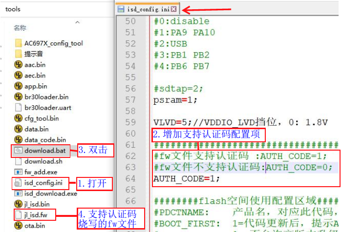
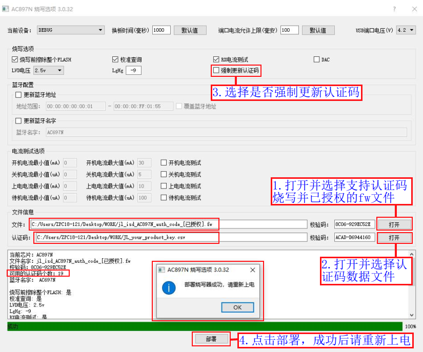
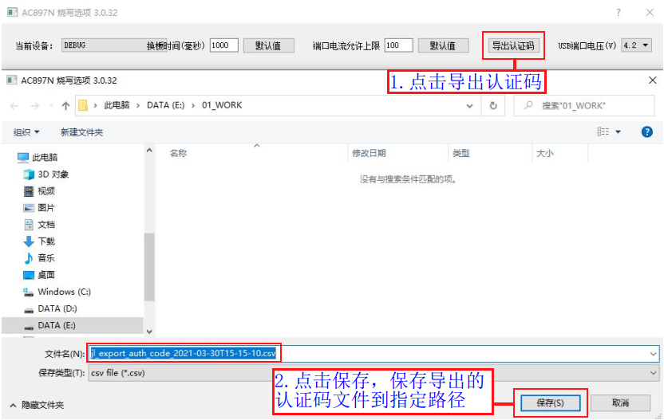
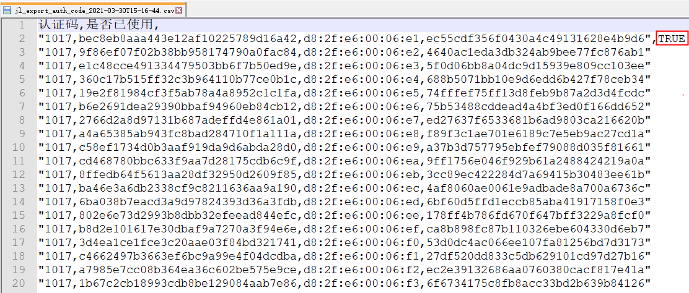
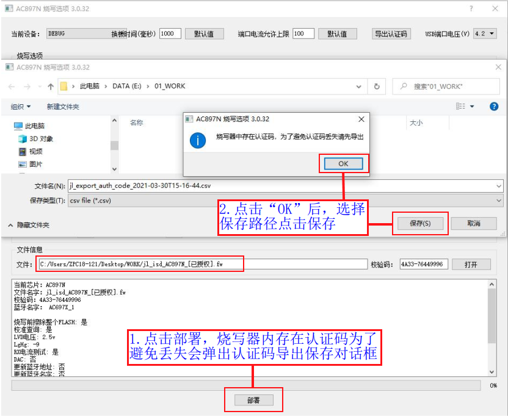

2.11. Programming Third-Party Data (Authentication Codes)
2.11.1. Use case
When SDK development requires third-party data, such as authentication codes (serial numbers, triples), the third-party data can be programmed into a specified location of the target chip at the same time as the target chip firmware, so that the SDK can use the third-party data programmed into the chip.
2.11.2. Preparing authentication code data
2.11.2.1. Preparing the data to be programmed
As shown in Authentication code data editing format, edit the authentication code data that the SDK needs in Notepad, one authentication code per line (the data of one authentication code cannot exceed 127 bytes; only 1 authentication code is programmed into each chip, that is, the SDK can only obtain one line of the data). After editing the data, change the extension of the your_product_key.txt file or save it as a your_product_key.csv file.

Authentication code data editing format
2.11.2.2. Converting the format of the data to be programmed
The data to be programmed must be converted to a format that the programmer can recognize before it can be programmed into the target chip.
Put the .csv file with the authentication code data to be converted and the conversion tool license_to_auth_csv.exe (click here to download) in the same directory;
Press
windows+Ron the keyboard at the same time, type `cmd` and open the command line window;For example, if the files are stored in the directory E:\test, go to that directory and run
license_to_auth_csv.exe your_product_key.csv. This generates the data fileJL_your_product_key.csv, which the programmer can recognize, as shown in Authentication code data format conversion and Authentication code data format after conversion.

Authentication code data format conversion

Authentication code data format after conversion
Note
By default, the content of each line in a .csv file is written as text. If the content of each line is binary data in hex form, you can change the .csv file extension to .hex, so that the data is written in binary form during programming.
For example, for the following line in a .csv file
112233
When it is written as text, "112233" is written: 6 bytes in total, namely '1', '1', '2', '2', '3', '3'.
For the following line in a .hex file
112233
It is written in binary form:"\x11\x22\x33" is written, 3 bytes in total, namely 0x11, 0x22, 0x33.
2.11.3. Authentication code data programming procedure
2.11.3.1. Creating a fw file that supports authentication code programming
Authentication codes can only be programmed if the corresponding fw programming file supports it. The steps for creating a fw file that supports authentication code programming are shown in Creating a fw file that supports authentication code programming:
Open the
isd_config.inifile in the download directory of the SDK project,Add the
AUTH_CODE=1;configuration item to the [SYS_CFG_PARAM] section of theisd_config.inifile, then save the file;Double-click the
download.batscript in the download directory to run it;A
jl_isd.fwfile that supports authentication code programming is regenerated.
Important
The isd_config.ini file in the SDK may be generated by a preprocessing tool. So if you modify isd_config.ini directly and then click Build (instead of double-clicking download.bat), your changes may be overwritten by a new isd_config.ini file generated by the preprocessing tool.
Some SDKs may generate isd_config.ini by preprocessing isd_config_rule.c. If you find that your modified isd_config.ini is reverted after you build the SDK, check whether this is the cause. If so, modify isd_config_rule.c directly.

Creating a fw file that supports authentication code programming
2.11.3.2. Updating the fw programming file and the authentication code file to the programmer
Following the relevant steps in the section "Checking and updating the programmer firmware version", open the control panel for updating the target chip firmware; updating the firmware for the AC897N chip is used here as a demonstration. First, authorize the fw file with authentication code programming support made in "Creating a fw file that supports authentication code programming"; here, unlimited mode is selected for the authorization, which generates the jl_isd_AC897N_auth_code\_\[已授权\].fw file. Then perform the steps shown in Deploying the fw file and authentication code file to the programmer:
Open and select the authorized fw file that supports authentication code programming;
Open and select the authentication code data file (if no authentication code file is selected, only the fw file is updated to the programmer, without the authentication code programming function);
In the programming options, choose whether to check "Force update authentication code" (强制更新认证码) (if checked, a chip that already has an authentication code is overwritten with a new one; to avoid waste, it is generally left unchecked)
Click "Deploy" (部署). After successful deployment, the message "Programmer deployed successfully, please power-cycle" (部署烧录器成功，请重新上电) appears;
After deployment is complete, power-cycle the programmer;
Note
When firmware is reprogrammed, different options determine whether the authentication code is erased:
Authentication code file selected? |
"Force update authentication code" (强制更新认证码) checked? |
Behavior |
|---|---|---|
Authentication code file selected |
Unchecked |
Keeps the authentication code already in the chip (if any) |
Authentication code file selected |
Force update checked |
Always overwrites the authentication code |
Not selected |
Unchecked |
Erases the authentication code already in the chip |
Important
If no authentication-code-related options are displayed in the deployment window, make sure that a fw file is selected and check whether the currently selected fw file specifies that authentication codes are to be programmed. For details, see the previous section, Creating a fw file that supports authentication code programming

Deploying the fw file and authentication code file to the programmer
Important
If no authentication-code-related options are displayed in the deployment window, make sure that a fw file is selected and check whether the currently selected fw file specifies that authentication codes are to be programmed. For details, see the previous section, Creating a fw file that supports authentication code programming
2.11.3.3. Programming authentication code data into the chip
Authentication codes are programmed in increasing order of the available serial numbers in the authentication code data file; that is, authentication codes are unique, and each chip is programmed with a different authentication code. While programming the chip firmware, the programmer also programs the authentication code data into the target chip, so the programming procedure is the same as for programming a single fw file.
The programming information section of the display shows the number of available authentication codes. After the firmware is programmed successfully, the progress bar of the corresponding channel also shows the serial number of the successfully programmed authentication code (matching the corresponding serial number in the authentication code data file).
2.11.4. Exporting authentication codes
2.11.4.1. Exporting to view the authentication code programming status
Following the relevant steps in the section "Update the target chip firmware on the programmer", open the control panel for updating the target chip firmware, as shown in Exporting authentication code information:
Click "Export authentication codes" (导出认证码); a save dialog appears;
Click Save to save the exported authentication code file to the specified path;

Exporting authentication code information
Open the exported authentication code file, as shown in Authentication code usage. Authentication codes that have been used are marked "TRUE" in the corresponding position, indicating that the authentication code has been programmed into the corresponding chip.

Authentication code usage
2.11.4.2. Exporting when updating the firmware to be programmed
If you update the firmware to be programmed before all the authentication codes have been used, a prompt indicates that unused authentication codes remain, to avoid losing them. As shown in Exporting authentication codes to a specified location:
After loading the target chip firmware to be updated, click Deploy (部署); a message box pops up with the message "The programmer contains authentication codes. To avoid losing them, please export them first" (烧录器中存在认证码，为了避免认证码丢失请先导出)
Click "OK" in the message box, select a save path and click Save to save the file of unused authentication codes; if you do not save it, the programming file cannot be updated.

Exporting authentication codes to a specified location
2.11.5. Notes
Authentication code data must be imported as a csv file. It is recommended that the maximum length of an authentication code not exceed 127bytes.
When importing authentication codes into each programmer, import a reasonable number of them, and update the programming file only after all the authentication codes have been programmed.
If you really need to change the programming file before all authentication codes have been programmed, manage the exported authentication code file yourself. When you later need to program the authentication codes that were not yet programmed, carefully check the imported authentication code file to avoid programming codes twice or losing codes.
The way authentication codes are accessed in the SDK may differ slightly between SDKs. For details, ask the person who provided the SDK.